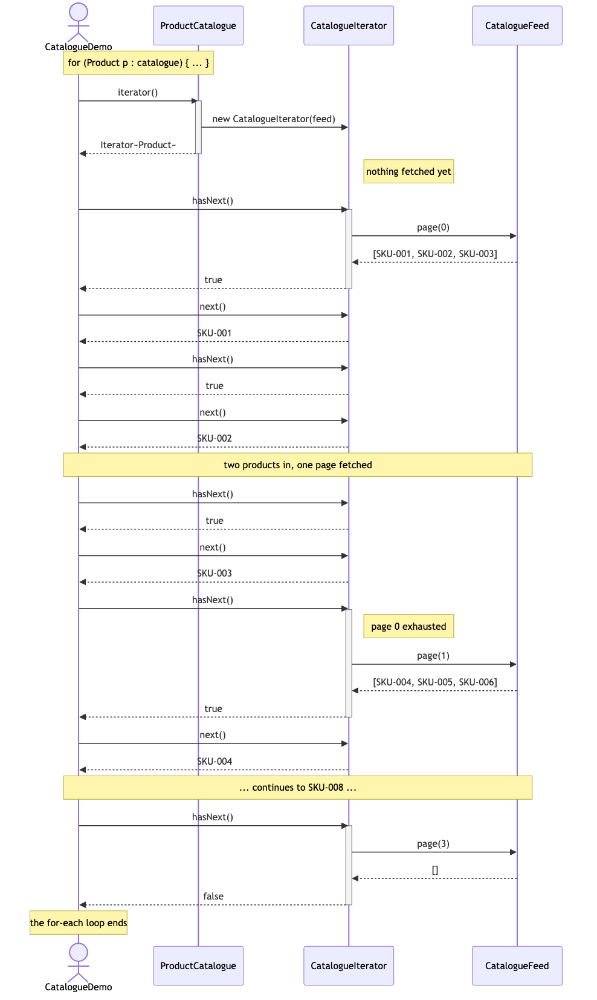

Iterator Pattern — UML Sequence Diagram
Shows the runtime interaction behind a single for-each loop. The important thing to follow is when the feed is touched: page 0 is fetched on the first hasNext(), page 1 only when the walk runs off the end of page 0, and if the caller stops early the remaining pages are never requested at all.

Notes
- The catalogue appears once and then drops out.
iterator()is called a single time, at the top of the loop, and after that every message goes to the iterator. The aggregate is not in the conversation, which is why it can safely be shared. - The first fetch happens on
hasNext(), not oniterator(). That one line of sequence is the laziness the tests assert. If the fetch moved into the constructor, the diagram would gain an arrow toFeedabove theIterator~Product~return, and stopping early would stop saving anything. hasNext()sometimes fetches and sometimes does not. Three of the calls above are pure position arithmetic; two of them cross a page boundary and go to the feed. The caller cannot tell the difference, and that is the point of the pattern.- The empty page is the terminator. The final
page(3)returning[]is the only way the feed has of saying "that is everything", and translating it into a plainfalseis work the caller no longer does. - Stopping early truncates the diagram. Break after SKU-002 and everything below the "two products in, one page fetched" note simply never happens — no
page(1), nopage(2), nopage(3). - Compare with
NaiveCatalogueBrowser: the same messages toFeed, but originating from the client, and drawn three times because there are three methods each with their own copy of the loop.